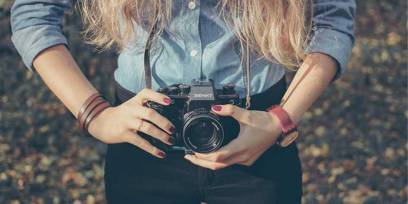
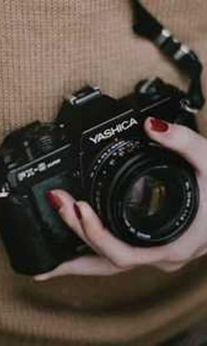

|  | ||
Istoria aparatului foto |
||
Inventia primei camere fotoPrima cameră portabilă a fost proiectată de Johann Zahn în 1685. Nu s-au înregistrat progrese semnificative în dezvoltarea până la aproximativ 130 ani mai târziu. Majoritatea încercărilor de a realiza camere erau inutile. În anul 1814 Joseph Nicephore Niepce a dat clic pe prima fotografie. Creditul pentru invenția primei camere este împărțit între Johann Zahn și Joseph Nicephore Niepce. Niépce a colaborat din 1829 cu Louis Daguerre pentru imbunătățirea metodei și substanțelor, dar data oficială a invenției fotografiei este 1839, când Daguerre a brevetat invenția numită de el „daghereotip” și a fost cumpărată de guvernul francez care a oferit-o tuturor gratuit la 19 august 1839. În anii 1880, George Eastman a dezvoltat filmul fotografic, care putea fi rulat într-un aparat foto. Această inovație a făcut posibilă capturarea mai multor imagini și a deschis calea către fotografia de masă. În 1888, Eastman a lansat primul aparat foto Kodak, care a fost primul aparat accesibil și ușor de utilizat. Acesta a popularizat fotografia, permițând oamenilor să facă fotografii și să trimită aparatul înapoi pentru procesare. În secolul al XX-lea, au fost dezvoltate camerele compacte și apoi aparatul foto digital. Camerele compacte au devenit din ce în ce mai mici și mai ușoare, în timp ce aparatul foto digital a înlocuit filmele cu senzori electronici pentru a captura și a stoca imagini digitale. 23.07.09 Google |
 | |
Evoluția smartphone-urilor cu funcții fotoIn anul 1997 Philippe Kahn a inventat primul telefon cu camera, surprinzand imagini de la nasterea fiicei sale si trimitandu-le la peste 2000 de persoane. In noiembrie 2000 a fost produs primul telefon comercial cu camera foto J-SH04 de catre Sharp Corporation si era disponibil doar pe piata din Japonia. In 2002 compania america Sanyo a lansat primele telefoane flip cu camera denumite Sanyo SCP-5300. In anul 2009 a fost lansat Samsung Memoir, un telefon care arata mai mult ca o camera foto cu functionalitati Android. Pentru a oferi o funcționalitate mai bună în diferite condiții de iluminare, smartphone-urile au început să fie echipate cu blițuri și autofocus, permițând capturarea de imagini mai bine iluminate și focalizate. O evoluție semnificativă a fost introducerea camerelor frontale, care au deschis calea pentru selfie-uri și pentru comunicarea prin video. Producătorii de smartphone-uri au început să integreze sisteme de camere multiple, inclusiv camere principale, camere ultra-wide, teleobiective și senzori de adâncime. Odată cu dezvoltarea tehnologiei smartphone, fotografia a devenit accesibilă și ușor de realizat pentru majoritatea oamenilor. Smartphone-urile moderne sunt echipate cu camere foto avansate, capabile să captureze imagini de înaltă calitate și să ofere funcții suplimentare, cum ar fi efecte, editare și partajare rapidă. 23.07.09 Google |
||
|
Copyright © 2023 |
||